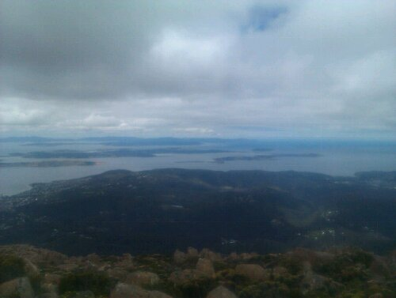

Walked to the top of Mount Wellington, the mountain that overlooks Hobart. The way up took about 2.5 hours, during which I was accompanied by Larry, a retired Canadian doctor who is now working as a poker instructor onboard the huge cruiseship that arrived here this morning, and a geography teacher from Hobart. Learned that, even in a small town like this, there two culturally different parts: east and west, with west (of course) being the wealthier part.
The view, as you can see, was fantastic.
The Tasman Peninsula at the back might be one of my next destinations.
The way back was a pretty rough track over huge boulders on a high plateau for most of the way.
Will probably feel my legs and feet tomorrow…
 A probably very busy place in the summer months because the famous world class surfing conditions at
A probably very busy place in the summer months because the famous world class surfing conditions at